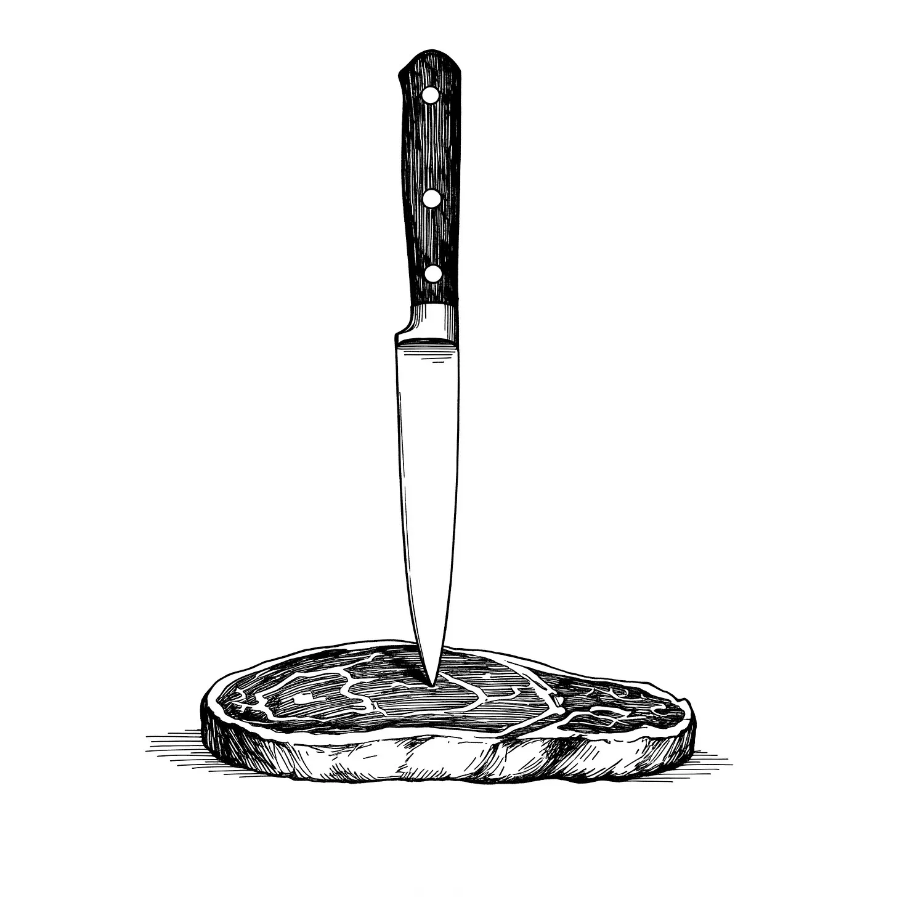

칼날이 스테이크 위에서 맴돌았고, 그는 이 한 끼의 식사가 자신의 몇 년을 앗아갈지 궁금했다.
[The knife hovered over the steak, and he wondered how many years this meal would steal from him.]
지난주보다 더 매끈해진 그의 손가락이 떨리는 정확함으로 식기를 움켜쥐었다. 한 입 한 입이 계산된 위험이었다—생존이냐 항복이냐. 삼 일 전만 해도 그는 쉰두 살이었다. 이제 웃음 주름은 녹아내리고, 회색 머리카락은 패배한 군대처럼 후퇴하고 있었다.
[His fingers, already smoother than they’d been last week, gripped the silverware with a trembling precision. Each bite was a calculated risk—sustenance versus surrender. Three days ago, he’d been fifty-two. Now, laugh lines were dissolving, gray hairs retreating like a defeated army.]
에이드리언은 규칙을 알고 있었다. 먹으면 젊음이 폭풍파도처럼 그를 덮칠 것이다. 단백질은 이 과정을 더 빠르게 가속화했다. 붉은 고기가 가장 심했다. 마블링이 있고 미디엄 레어로 구운 이 스테이크는 아마도 그의 축적된 세월에서 10년은 앗아갈 것이다.
[Adrian knew the rules. Eat, and youth would crash into him like a rogue wave. Protein accelerated the process faster. Red meat was the worst offender. This steak—marbled, medium-rare—would likely shave a decade from his accumulated years.]
그는 정확한 삼각형 모양으로 자르며, 하얀 도자기 접시에 고기 즙이 고이는 것을 지켜보았다. 첫 입은 절박함과 두려움의 맛이었다.
[He cut a precise triangle, watching the juices pool on the white porcelain. The first bite tasted like desperation and fear.]
즉시, 그의 피부가 따끔거렸다. 주름이 펴졌다. 관절염으로 부어올랐던 손마디가 거의 느껴지지 않을 만큼 작은 소리를 내며 제자리를 잡았다. 레스토랑의 은은한 조명 아래에서는 7번 테이블에서 일어나고 있는 변신을 아무도 알아채지 못할 것이다.
[Immediately, his skin tingled. Wrinkles smoothed. Arthritis-swollen knuckles reset themselves with tiny, almost imperceptible clicks. In the restaurant’s soft lighting, no one would notice the metamorphosis happening at table seven.]
에이드리언을 제외하고는 아무도.
[No one except Adrian.]
와인잔에 비친 그의 모습은 변화를 보여주었다: 쉰두 살이 마흔다섯이 되고, 그다음 마흔, 그리고 서른다섯이 되어갔다. 씹을 때마다 카운트다운이 되고, 삼킬 때마다 항복이었다.
[His reflection in the wine glass showed the transformation: fifty-two becoming forty-five, then forty, then thirty-five. Each chew was a countdown, each swallow a surrender.]
이건 불멸이 아니었다. 이건 지워짐이었다.
[This wasn’t immortality. This was erasure.]
스테이크는 너무나 빨리 사라졌다. 에이드리언은 빈 접시를 응시했고, 뼈는 오래전에 죽은 무언가의 유물처럼 반짝였다. 그는 냅킨으로 입을 닦으며, 서빙 직원이 접시를 치우는 동안 그녀의 시선을 마주치지 않으려 조심했다.
[The steak was gone too quickly. Adrian stared at the empty plate, the bone gleaming like a relic of something long dead. He wiped his mouth with a napkin, careful not to meet the server’s gaze as she whisked the dish away.]
레스토랑은 그의 주위에서 활기찼다—촛불 앞에서 속삭이는 연인들, 도자기에 긁히는 포크 소리, 때때로 건배하며 부딪치는 유리잔 소리. 정상적인 삶을 사는 정상적인 사람들. 아무런 결과 없이 먹는 사람들.
[The restaurant hummed around him—couples murmuring over candlelight, forks scraping against porcelain, the occasional clink of glasses raised in toast. Normal people, living normal lives. Eating without consequence.]
에이드리언은 소매를 손목까지 내리며 조절했다. 그의 손은 이제 매끄러웠고, 나이나 노동의 흔적이 없었다. 한때 그의 피부를 가로지르며 지도를 그렸던 혈관들은 사라지고, 젊음의 탄력으로 대체되었다. 그는 그것이 싫었다. 자신을 보며 살아온 수십 년을 잊어버리는 것이 얼마나 쉬운지가 싫었다.
[Adrian adjusted his sleeves, pulling them down to his wrists. His hands were smooth now, unblemished by age or labor. The veins that had once traced maps across his skin were gone, replaced by the tautness of youth. He hated it. Hated how easy it was to look at himself and forget the decades he’d lived.]
서빙 직원이 계산서를 들고 돌아왔고, 그녀의 미소는 공손하지만 무심했다. 그녀는 스물다섯 살도 되지 않아 보였고, 순간 에이드리언은 자신이 지금 그녀보다 더 젊어 보이는지 궁금했다.
[The server returned with the check, her smile polite but distant. She couldn’t have been older than twenty-five, and for a fleeting moment, Adrian wondered if he looked younger than her now.]
“괜찮으셨나요?” 그녀가 고개를 살짝 기울이며 물었다.
[“Everything okay?” she asked, tilting her head slightly.]
“완벽했어요,” 에이드리언은 거짓말했다. 그의 목소리는 한 시간 전보다 더 가볍고 덜 쉰 소리가 났다. 그는 목을 가다듬고 지갑에서 깨끗한 지폐를 꺼내 그녀에게 건넸다. “잔돈은 가지세요.”
[“Perfect,” Adrian lied. His voice sounded lighter, less gravelly than it had an hour ago. He cleared his throat and handed her a crisp bill from his wallet. “Keep the change.”]
그녀는 감사 인사를 하고 자리를 떴고, 에이드리언은 자신이 방금 한 일의 무게와 함께 홀로 남겨졌다.
[She thanked him and walked away, leaving Adrian alone with the weight of what he’d just done.]
밖에서는 보도로 나서자 겨울 공기가 그의 피부를 물었다. 그는 상점 창문에 비친 자신의 모습을 보고 얼어붙었다.
[Outside, the winter air bit at his skin as he stepped onto the sidewalk. He caught his reflection in a shop window and froze.]
서른둘. 아마도 서른하나.
[Thirty-two. Maybe thirty-one.]
그의 머리카락은 이제 더 어두워졌고, 관자놀이의 회색 흔적은 더 이상 없었다. 한때 그의 눈가를 둘러쌌던 주름은 완전히 사라지고, 그에게는 낯설게 느껴지는 매끄러움으로 대체되었다. 심지어 그의 자세도 변했다—더 곧고, 더 자신감 있게, 마치 그의 몸이 아직 고통이나 피로의 언어를 배우지 않은 것처럼.
[His hair was darker now, no longer flecked with gray at the temples. The crow’s feet that had once framed his eyes were gone entirely, replaced by a smoothness that felt alien to him. Even his posture had changed—straighter, more confident, as if his body hadn’t yet learned the language of pain or fatigue.]
그는 손을 코트 주머니에 넣고 걷기 시작했고, 차가운 바람을 피해 고개를 숙였다. 도시는 평소의 리듬대로 움직였다: 경적을 울리는 택시들, 목에 스카프를 단단히 두르고 서둘러 지나가는 행인들, 서로의 주의를 끌기 위해 외치는 길거리 상인들. 모든 것이 너무나 평범하고, 가슴 아프게 정상적이었지만, 에이드리언은 그 모든 것 속에서 침입자처럼 느껴졌다—시간 그 자체와 맞지 않는 사람처럼.
[He shoved his hands into his coat pockets and started walking, head down against the cold wind. The city moved around him in its usual rhythm: taxis honking, pedestrians rushing past with scarves wrapped tight around their necks, street vendors shouting over each other for attention. It was all so ordinary, so achingly normal, and yet Adrian felt like an intruder in it all—a man out of sync with time itself.]
아파트에 도착할 때쯤, 배고픔이 다시 그를 갉아먹고 있었다. 육체적인 배고픔이 아니라—그는 그것을 위해 충분히 먹었다—더 깊고, 더 교활한 무언가였다. 음식과는 관계없고 생존과 모든 것이 관련된 갈망이었다.
[By the time he reached his apartment, hunger was gnawing at him again. Not physical hunger—he’d eaten enough for that—but something deeper, more insidious. A craving that had nothing to do with food and everything to do with survival.]
그는 문을 잠그고 그 앞에 기대어 서서, 잠시 마음을 가라앉히기 위해 눈을 감았다. 아파트는 부엌에서 들려오는 희미한 냉장고 소리를 제외하고는 조용했다.
[He locked the door behind him and leaned against it, closing his eyes for a moment to steady himself. The apartment was quiet except for the faint hum of the refrigerator in the kitchen.]
조리대 위에는 식빵 한 덩어리와 땅콩버터 병이 놓여 있었다—비상시를 위해 준비해둔 기본적인 식료품들이었다. 그는 그것들을 한참 동안 바라보다가 등을 돌려 대신 화장실로 향했다.
[On the counter sat a loaf of bread and a jar of peanut butter—simple staples he kept for emergencies. He stared at them for a long time before turning away and heading to the bathroom instead.]
세면대 위의 거울은 그가 이미 알고 있던 사실을 확인시켜 주었다: 그는 오늘 아침보다 더 젊어져 있었다.
[The mirror above the sink confirmed what he already knew: he was younger than he’d been this morning.]
그는 마치 완전히 다른 사람의 것처럼 자신의 반영을 연구하며 더 가까이 다가갔다. 그를 마주 보고 있는 얼굴은 익숙하면서도 잘못되어 있었다—너무 매끄럽고, 너무 완벽하고, 너무… 공허했다.
[He leaned closer, studying his reflection as if it belonged to someone else entirely. The face staring back at him was familiar but wrong—too smooth, too perfect, too…empty.]
에이드리언은 머리를 쓸어넘기며 한숨을 쉬었다. 이게 얼마나 더 계속될 수 있을까? 그에게서 텅 빈 껍데기만 남을 때까지 얼마나 더 많은 식사가 필요할까? 그는 저녁을 완전히 건너뛰고, 시간 대신 배고픔이 그를 괴롭히도록 내버려 두는 것을 생각했다—하지만 그는 그것보다 더 잘 알고 있었다.
[Adrian ran a hand through his hair and sighed. How long could this go on? How many more meals before there was nothing left of him but a hollow shell? He thought about skipping dinner entirely, letting hunger take its toll instead of time—but he knew better than that.]
마지막으로 단식을 시도했을 때, 그는 이틀 만에 쓰러져서 팔에 링거를 꽂은 채 병원 침대에서 깨어났고, 간호사는 그에게 지금이 몇 년도인지 물었다.
[The last time he’d tried fasting, he’d collapsed after two days and woken up in a hospital bed with an IV drip in his arm and a nurse asking him what year it was.]
그는 그런 일이 다시 일어나도록 둘 수 없었다.
[He couldn’t let that happen again.]
그날 밤, 에이드리언은 음식을 꿈꾸었다.
[That night, Adrian dreamed of food.]
열램프 아래에서 반짝이는 구이들, 너무 두꺼워서 외설적으로 보이는 프로스팅으로 층을 이룬 케이크들, 거의 빛이 날 것처럼 잘 익은 과일 그릇들이 그의 앞에 펼쳐져 있었다.
[A buffet stretched out before him—roasts glistening under heat lamps, cakes layered with frosting so thick it seemed obscene, bowls of fruit so ripe they practically glowed.]
그가 접시를 잡으려 했을 때 자신의 손을 보고 망설였다—이제 그의 손은 작았고, 어린아이 같았다.
[He reached for a plate but hesitated when he saw his hands—they were small now, childlike.]
“먹어,” 누군가가 그의 뒤에서 속삭였다.
[“Eat,” someone whispered behind him.]
그가 돌아보았지만 아무도 없었다.
[He turned but saw no one there.]
“먹어,” 그 목소리가 반복했다.
[“Eat,” the voice repeated.]
뷔페를 다시 바라보았을 때, 모든 것이 변해있었다—음식들은 이제 썩어가고 있었고, 구더기들이 부패한 더미 속에서 꿈틀거리고 있었다.
[When he looked back at the buffet, everything had changed—the food was rotting now, maggots writhing in piles of decay.]
에이드리언은 땀에 흠뻑 젖은 채 잠에서 깨어났다.
[Adrian woke up drenched in sweat.]
다음 날 아침은 아무런 위안도 가져다주지 않았다.
[The next morning brought no relief.]
침대 옆 탁자 위의 휴대폰이 진동했다—사라에게서 온 문자였다.
[His phone buzzed on the nightstand—a text from Sarah.]
“몇 주째 소식이 없네. 괜찮아?”
[“Haven’t heard from you in weeks. Are you okay?”]
그는 오랫동안 화면을 응시하다가 답장을 썼다: “괜찮아.”
[He stared at the screen for a long time before typing out a response: “I’m fine.”]
그건 사실이 아니었다—근처에도 못 갔다—하지만 뭐라고 말할 수 있었을까? 매 끼니가 그를 망각으로 이끌고 있다고? 얼마나 더 오래 정상인 척 할 수 있을지 모르겠다고?
[It wasn’t true—not even close—but what could he say? That every meal brought him closer to oblivion? That he didn’t know how much longer he could keep pretending to be normal?]
사라는 이해하지 못할 것이다—그리고 왜 이해해야 하겠는가? 그녀는 두 달 전 마지막 저녁 식사 이후로 그를 보지 못했다, 그가 아직 자신처럼 보였을 때—혹은 적어도 그녀가 알아볼 수 있는 어떤 모습의 자신이었을 때.
[Sarah wouldn’t understand—and why should she? She hadn’t seen him since their last dinner together two months ago when he’d still looked like himself—or at least some version of himself that she recognized.]
이제… 이제 그녀가 그를 알아볼 수나 있을지 확신할 수 없었다.
[Now…now he wasn’t sure she’d even recognize him at all.]
에이드리언은 그날의 대부분을 거울을 피하고 음식에 대해 생각하지 않으려 하며 보냈다—하지만 저녁이 되자, 배고픔이 다시 한번 승리했다.
[Adrian spent most of that day avoiding mirrors and trying not to think about food—but by evening, hunger won out again.]
이번에는 수프였다—너무 빨리 가속화되지 않을 만큼 가벼우면서도 하루나 이틀은 버틸 수 있을 만큼 충분한 것이었다.
[This time it was soup—something light enough not to accelerate things too quickly but substantial enough to keep him going for another day or two.]
그가 그릇에서 수프를 홀짝일 때마다, 그는 그것이 다시 일어나는 것을 느꼈다—뼈를 감싸는 피부가 팽팽해지고; 근육이 더 강해지고; 관절이 이 땅에서 52년을 보낸 것과는 달리 더 부드럽게 움직이는 것을.
[As he sipped from the bowl, he felt it happening again—the tightening of skin across bone; muscles growing stronger; joints moving more fluidly than they had any right to after fifty-two years on this earth.]
식사를 마칠 때쯤, 그는 스물다섯—어쩌면 그보다 더 어려 보였다.
[By the time he finished eating, he looked twenty-five—maybe younger.]
그는 빈 그릇을 응시하며 배고픔 그 자체만 남을 때까지 이것을 얼마나 더 계속할 수 있을지 궁금했다.
[He stared into the empty bowl and wondered how much longer he could keep doing this before there was nothing left but hunger itself.]